bitcast 뒤의 sign bits 정보를 전달하기
벡터를 더 작은 원소로 나누어도 유지되는 값의 성질을 공용 분석 함수에 전달한다.
Issue87624.pdf의 전체 내용입니다. 설명·코드·표·검증 기록을 생략하지 않고 옮겼습니다. 그림 안의 문자 인식 결과에는 기호 오류가 있을 수 있어 이미지도 함께 제공합니다.
이 문서의 목차
실습 기록 / Closed Good First ValueTracking/InstCombine / 선택한 이슈
Closed Good First ValueTracking/InstCombine 실습 기록
1. 선택한 이슈
Issue: LLVM Issue #87624
제목: [ValueTracking] ComputeNumSignBitsImpl - add basic handling of BITCAST
nodesIssue 링크: https://github.com/llvm/llvm-project/issues/87624
Labels: good first issue , llvm:instcombine , llvm:support상태: Closed / completed 해결 PR: #127218
Merge commit: 6311e3fcc8539cf0f474b28f82a465e83013a792요약
이 이슈가 다루는 값은 결국 다음 두 가지뿐이다.
0000 0000
1111 1111이처럼 한 element의 모든 비트가 같은 값을 더 작은 element들로 나누면, 나뉜 element 역시 모든 비트가 같다.
0000 0000 → 00 | 00 | 00 | 00
1111 1111 → 11 | 11 | 11 | 11따라서 <1 x i8> 값을 <4 x i2> 로 bitcast 하더라도 각 i2 element는 여전히 0 또는 -1이다. 0과 -1은 arithmetic right shift를 해도 값이 변하지 않으므로 다음 ashr 는 제거할 수 있다.
; Before
%wide = sext <1 x i1> %condition to <1 x i8>
%narrow = bitcast <1 x i8> %wide to <4 x i2>
%shifted = ashr <4 x i2> %narrow, splat (i2 1)
ret <4 x i2> %shifted; After
%wide = sext <1 x i1> %condition to <1 x i8>
%narrow = bitcast <1 x i8> %wide to <4 x i2>
ret <4 x i2> %narrow페이지 배치·기호·도식 확인하기

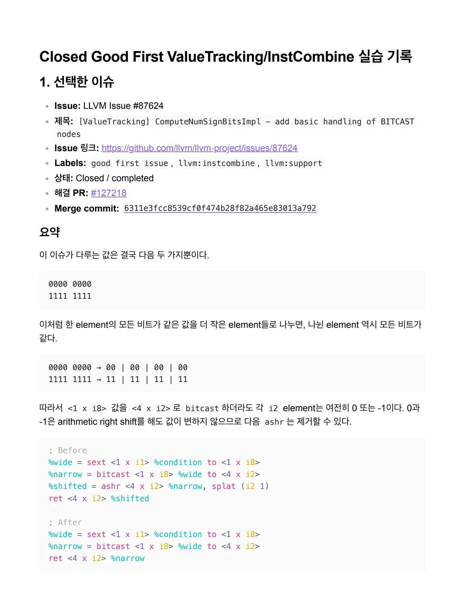
ashr / 를 제거하는 규칙 자체는 LLVM에 이미 있었다. 문제는 공용 분석 함수인 / ComputeNumSignBitsImpl 이 bitcast 를 건너서도 “모든 비트가 sign bit와 같
ashr를 제거하는 규칙 자체는 LLVM에 이미 있었다. 문제는 공용 분석 함수인 ComputeNumSignBitsImpl 이 bitcast 를 건너서도 “모든 비트가 sign bit와 같다”는 사실을 전달하지 못했다는 점이다. 최종 패치는 ValueTracking.cpp에 이 최소 추론을 추가했다.
왜 이 이슈가 InstCombine 문제라고 판단했는가?
관찰되는 현상은 -passes=instcombine을 실행한 뒤에도 아무 효과가 없는 ashr가 IR에 남는 것이다. InstCombine의 visitAShr 는 기존 simplifyAShrInst 를 호출하고, 이 simplifier는 ComputeNumSignBits 의 결과가 element width와 같으면 ashr 를 제거한다.
따라서 새로운 ashr transform을 만들 문제가 아니라, 기존 transform이 필요로 하는 sign-bit 정보를 보
강하는 문제라고 판단했다. 실제 결손은 공용 분석 코드인 llvm/lib/Analysis/ValueTracking.cpp 에있었으며, 이슈에 llvm:instcombine 과 llvm:support label이 함께 붙은 이유도 여기에 있다.
이 이슈가 요구한 범위
이슈는 모든 bitcast를 정밀하게 분석하자는 제안이 아니다. 다음 조건을 만족하는 가장 단순한 fast case만 요구했다.
source element width = N
destination element width = MN은 M의 배수
source의 NumSignBits = N⇒ 각 destination element의 NumSignBits = M여기서 “wider source”는 source 전체 타입의 크기가 더 크다는 뜻이 아니라, source의 개별 element width가 더 크다는 뜻이다. bitcast 이므로 source와 destination의 total bit width는 같다. 예를 들어 <1 x i8> 과 <4 x i2> 는 모두 총 8비트지만 element width는 각각 8비트와 2비트다.
이슈 작성자는 SSE intrinsic 사이의 bitcast를 다루다가 이 결손을 발견했다고 설명했다. 원래 프로그램이나 benchmark는 공개하지 않았으므로, 이 문서도 성능 효과를 추정하지 않고 이슈가 제공한 reduced IR을 기 준으로 분석한다.
구분 | 내용 |
|---|---|
이슈가 직접 제공한 것 | ComputeNumSignBitsImpl 이라는 문제 위치, SelectionDAG 선례, reduced IR, Alive2 proof |
패치를 보기 전에 추정한 것 | ValueTracking.cpp 의 BitCast 처리, fixed-vector/type guard, InstCombine regression test |
실제 merged patch에 서 확인한 것 | 예상한 파일과 fast-case 범위가 일치했으며, 기존 wrapper로 source의 모 든 lane을 분석 |
페이지 배치·기호·도식 확인하기

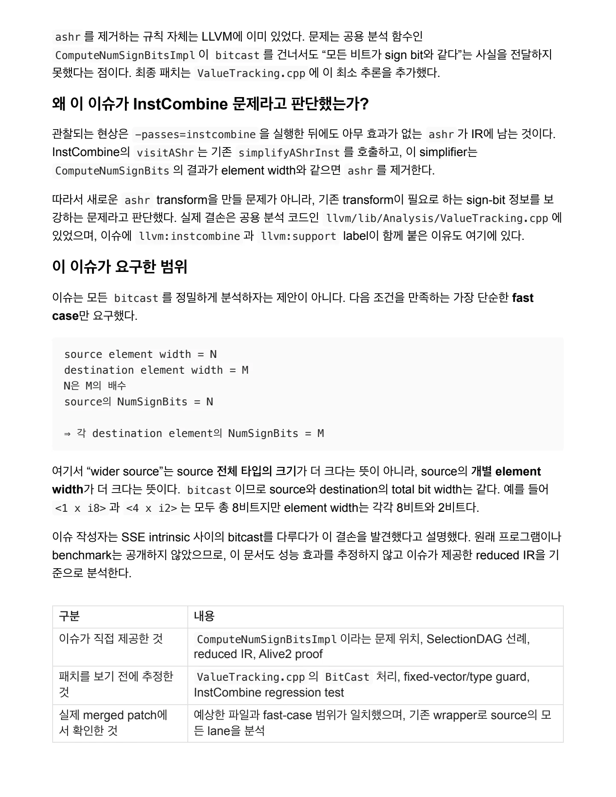
핵심 패턴과 / 2. instruction / 이슈의 source는 다음과 같다.
2. 핵심 패턴과 instruction
이슈의 source는 다음과 같다.
define <4 x i2> @src(<1 x i8> %a, <1 x i8> %b) {
%condition = icmp sgt <1 x i8> %a, %b
%wide = sext <1 x i1> %condition to <1 x i8>
%narrow = bitcast <1 x i8> %wide to <4 x i2>
%shifted = ashr <4 x i2> %narrow, splat (i2 1)
ret <4 x i2> %shifted
}이 IR에 등장하는 명령어
icmp sgt : 두 signed integer를 비교하고 i1 결과를 만든다. sext : sign bit를 복제하면서 더 넓은 integer type으로 확장한다. bitcast : 실제 비트는 바꾸지 않고, total bit width가 같은 다른 type으로 재해석한다. ashr : 오른쪽으로 shift하고 빈 상위 비트를 sign bit로 채운다.
ret: 계산 결과를 반환한다.전체 흐름은 다음과 같다.
1. icmp sgt 는 비교 결과로 false 또는 true , 즉 i1 값 0 또는 1을 만든다.
2. i1 을 i8 로 sext 하면 0은 0000 0000 , 1은 1111 1111 이 된다. i1 의 1은 signed 관점에서 -1
이기 때문이다.
3. bitcast 는 이 8비트를 네 개의 i2 element로 나눈다. 각 element는 00 또는 11 이다.
4. 00과 11은 ashr 1을 해도 그대로이므로 마지막 shift는 아무 효과가 없다.
결국 source 전체는 “비교 결과를 0 또는 -1 mask로 만들고 네 개의 i2 element로 재해석한 뒤, 아무 효 과가 없는 shift를 한 코드”다. 기대하는 target은 shift만 제거한 다음 IR이다.
define <4 x i2> @tgt(<1 x i8> %a, <1 x i8> %b) {
%condition = icmp sgt <1 x i8> %a, %b
%wide = sext <1 x i1> %condition to <1 x i8>
%narrow = bitcast <1 x i8> %wide to <4 x i2>
ret <4 x i2> %narrow
}ComputeNumSignBits 가 연결하는 정보페이지 배치·기호·도식 확인하기

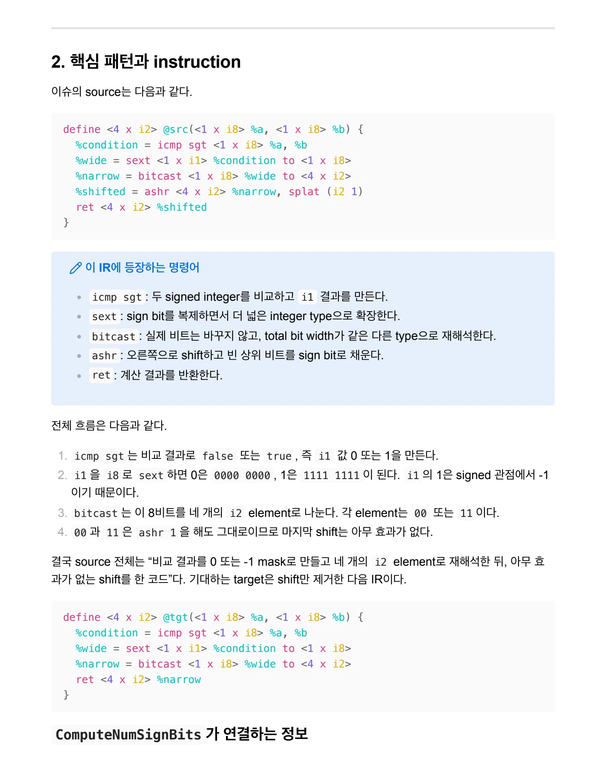
ComputeNumSignBits 는 sign bit를 포함하여, 최상위 비트부터 sign bit와 같은 값이 몇 개 연속된다고 보 / 장할 수 있는지 반환한다. / i8 값 비트 표현 sign b
ComputeNumSignBits 는 sign bit를 포함하여, 최상위 비트부터 sign bit와 같은 값이 몇 개 연속된다고 보 장할 수 있는지 반환한다.
i8 값 | 비트 표현 | sign bits 수 |
|---|---|---|
0 | | 8 |
-1 | | 8 |
1 | | 7 |
64 | | 1 |
기존 simplifyAShrInst에는 다음 원리가 이미 구현되어 있었다.
NumSignBits(X) == bitwidth(X)
and 0 <= shift amount < bitwidth(X)
⇒ ashr X, shift amount == X패치 전에도 %wide 가 8 sign bits라는 사실은 알 수 있었다. 그러나 %narrow 를 계산하는 bitcast 에서 그 정보가 끊겼기 때문에 ashr simplifier가 기존 규칙을 적용하지 못했다. 패치는 바로 이 끊어진 분석 정보 만 이어 준다.
배경지식: vector와 DemandedElts
ComputeNumSignBits 의 반환값은 lane별 vector가 아니라 정수 하나다. 따라서 분석을 요청받은 모든 lane에 공통으로 보장되는 최솟값을 반환한다. 예를 들어 세 lane의 sign bits 수가 각각 8, 7, 1이 면 세 lane을 모두 요구할 때는 1을, 앞의 두 lane만 요구할 때는 7을 반환할 수 있다. 이때 현재 답이 필요한 lane을 표시하는 bit mask가 DemandedElts 다.
DemandedElts = 111 → lane 0, 1, 2 분석 → min(8, 7, 1) = 1
DemandedElts = 011 → lane 0, 1 분석 → min(8, 7) = 7최종 패치는 기존 ComputeNumSignBits wrapper를 호출한다. 이 wrapper가 scalar와 fixed vector에 맞는 “모든 source lane” mask를 만들어 주므로 잘못된 크기의 mask를 직접 구성할 필요가 없다.
이번 이슈의 범위 밖: partial sign bits와 endianness
0000 0001 은 7 sign bits를 갖지만 i2 로 나누면 00 | 00 | 00 | 01 처럼 모든 조각이 같지는 않다. 이 정보까지 정밀하게 전달하려면 어떤 조각이 어느 destination lane에 대응하는지 계산해야 하 며, 그 순서는 endianness의 영향을 받는다. SelectionDAG의 slow case는 이 경우까지 처리하지
페이지 배치·기호·도식 확인하기

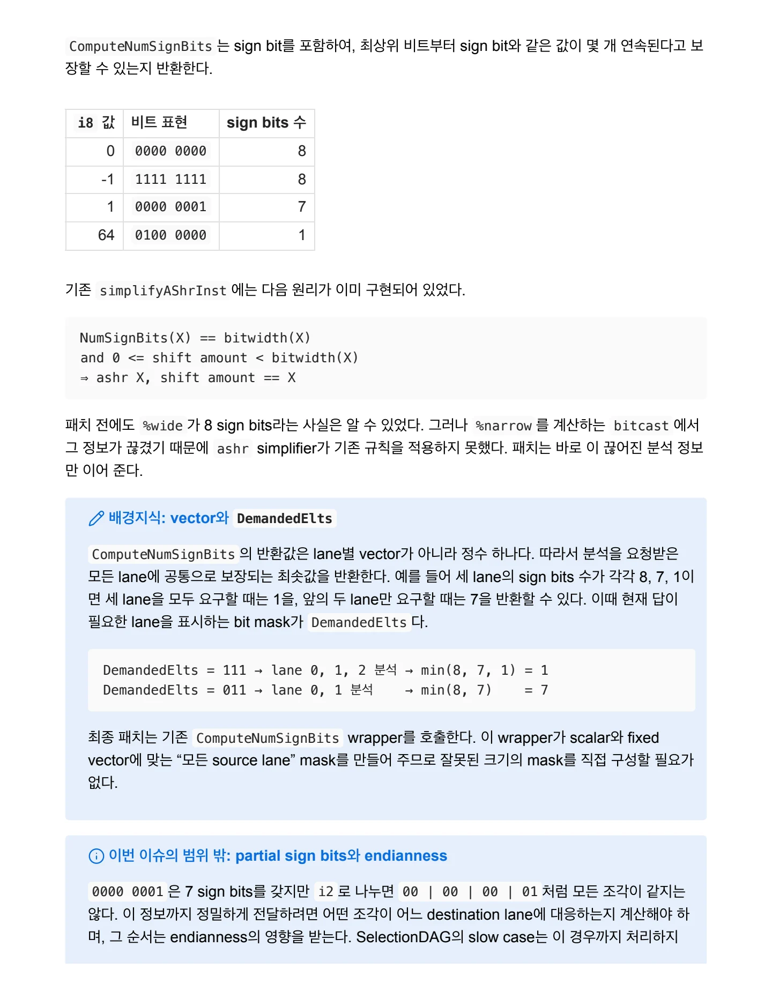
만, Issue #87624와 최종 patch는 source element의 모든 비트가 같은 fast case만 구현했다. / fast case는 어느 순서로 나누더라도 모든 조각이 같으므로 en
만, Issue #87624와 최종 patch는 source element의 모든 비트가 같은 fast case만 구현했다. fast case는 어느 순서로 나누더라도 모든 조각이 같으므로 endianness와 무관하다.
3. Alive2 검증 / IR 관찰
src/tgt
define <4 x i2> @src(<1 x i8> %a, <1 x i8> %b) {
%condition = icmp sgt <1 x i8> %a, %b
%wide = sext <1 x i1> %condition to <1 x i8>
%narrow = bitcast <1 x i8> %wide to <4 x i2>
%shifted = ashr <4 x i2> %narrow, <i2 1, i2 1, i2 1, i2 1>
ret <4 x i2> %shifted
}define <4 x i2> @tgt(<1 x i8> %a, <1 x i8> %b) {
%condition = icmp sgt <1 x i8> %a, %b
%wide = sext <1 x i1> %condition to <1 x i8>
%narrow = bitcast <1 x i8> %wide to <4 x i2>
ret <4 x i2> %narrow
}확인 결과는 다음과 같다.
이슈 원문의 Alive2 proof — 참고용: https://alive2.llvm.org/ce/z/NvZpPa 직접 재현한 Alive2 링크: https://alive2.llvm.org/ce/z/jdx8De 검증 범위: <1 x i8> → <4 x i2> representative fixed-vector case
결과와 IR 변화 분석
직접 실행한 결과 Alive2는 다음 메시지를 출력했다.

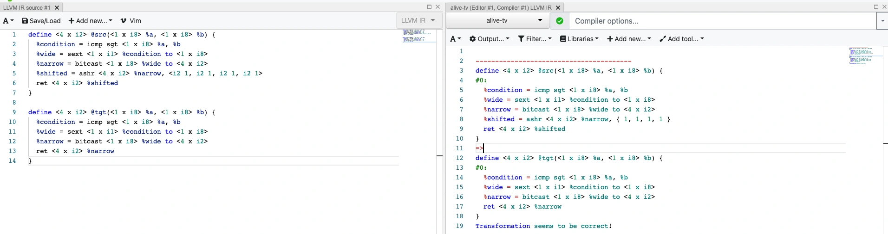
그림 안의 텍스트 · 문자 인식
erlne ch x 22 e8rccc X 20 8d.c X 202 80K 1C0nG--208 - 200 59 1 3 260 06r 6 wwide - 80x- S1 X 2h scondition to Al x 18> tnarrow = bitcast <1 x 18> wide to <4 X 12> aghr Cu X 1Z> tnarrow, <12 L, 12 2. 12 2. 12 1> 당 % 12 k5ggg k 10 8l 5 x 102 3 | ICmp BOE CL X 102 00. t sext <1 x il~ tcondition to <1 x i8y bitcast <l x i8> lwide to <4 X 12> Compiler options .. e output...• T Flter.• e Libraries* +Add new...• Add tool..• eL ne Cw X 12가 HsrC/CL X 102 84, C X 102 BB) 1 -ion = icmp sat <l x i8> 8a. s Bext <I x i13 tcondition to <1 x 182 • bitcast <1 x 18> 8wide to <0 X 123 tshitted - ashz <4 x 12> tnarrow, (1, 2, _. _ define <4 x 123 gtgt(<1 x 183 8a, <1 x 18> 8b) ( scondition = icmp sqt <1 X 18> 8a, 81 tvide - Bext I x 113 tcondition to <1 x 183 tnarrow • bitcast <L x 18> 8wide to <4 X 12: cot & x i2> narro wwang .orma ion geeng to be cozrec..
이미지에서 읽은 문자입니다. 코드 기호는 그림에서 확인하세요.
페이지 배치·기호·도식 확인하기

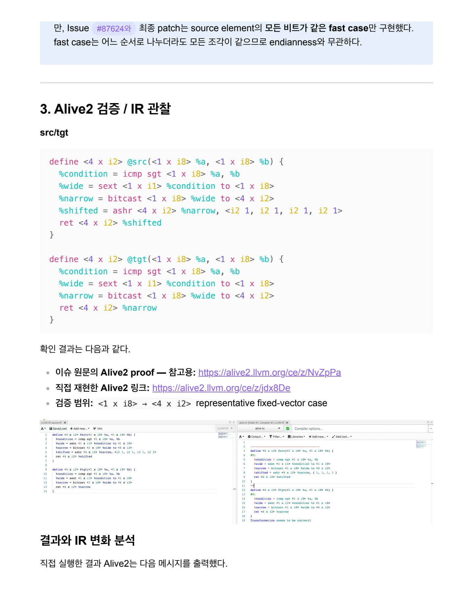
Transformation seems to be correct! / source와 target을 비교하면 icmp , sext , bitcast 는 그대로이고 마지막 ashr 하나만 제거되었다. /
Transformation seems to be correct!source와 target을 비교하면 icmp , sext , bitcast 는 그대로이고 마지막 ashr 하나만 제거되었다.
src: icmp → sext → bitcast → ashr → ret
tgt: icmp → sext → bitcast → ret이 제거가 안전한 이유는 sext <1 x i1> ... to <1 x i8>의 결과가 다음 두 값 중 하나이기 때문이 다.
false → 0000 0000
true → 1111 1111이를 <4 x i2> 로 bitcast 하면 각 destination lane은 각각 00 또는 11 이 된다.
0000 0000 → 00 | 00 | 00 | 00
1111 1111 → 11 | 11 | 11 | 1100 과 11 은 arithmetic right shift를 한 번 수행해도 각각 00 과 11 로 유지된다. 따라서 %shifted 와 %narrow 는 항상 같은 값을 가지며, target이 %narrow 를 바로 반환해도 source와 결과가 같다.
Alive2는 가능한 입력에 대해 source가 정의된 경우 target이 다른 결과를 만들거나 새로운 poison 또는 undefined behavior를 도입하는지도 함께 검사한다. 이번 결과는 이 reduced fixed-vector case의 ashr 제거가 안전함을 증명한다. 모든 bitcast나 일부 비트만 sign bit로 알려진 경우까지 일반적으로 증 명한 것은 아니다.
4. Compiler Explorer / assembly 관찰
도구: Compiler Explorer 직접 재현한 LLVM IR/assembly 비교: https://compiler-explorer.com/z/1crx4od3q Compiler: LLVM llc trunk
Target triple: x86_64-unknown-linux-gnuCPU: x86-64-v3
옵션:-O2 -mtriple=x86_64-unknown-linux-gnu -mcpu=x86-64-v3이 페이지에 연결된 자료
페이지 배치·기호·도식 확인하기

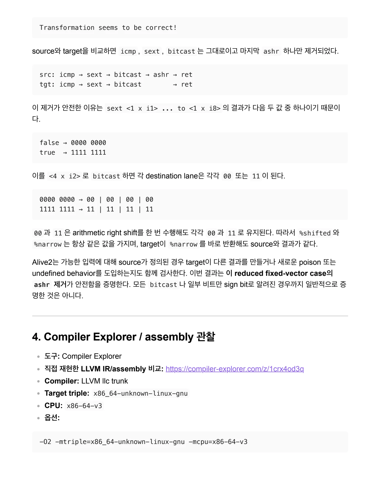
3장에서 검증한 src 와 tgt 를 각각 LLVM IR 입력창에 넣고 동일한 llc 조건으로 비교한다. Alive2가 / 두 IR의 의미 보존을 검사한다면, Compiler Explorer에서는
3장에서 검증한 src와 tgt를 각각 LLVM IR 입력창에 넣고 동일한 llc 조건으로 비교한다. Alive2가 두 IR의 의미 보존을 검사한다면, Compiler Explorer에서는 실제 machine code가 달라지는지를 확인한 다.
Source / Target assembly
두 함수는 label을 제외하고 동일한 assembly를 생성한다.
cmp dil, sil
setg al
neg al
mov ecx, eax
and cl, 3
vmovd xmm0, ecx
vpinsrb xmm0, xmm0, ecx, 4
vpinsrb xmm0, xmm0, ecx, 8
shr al, 6
vpinsrb xmm0, xmm0, eax, 12
ret관찰한 차이
구분 | Source | Target |
|---|---|---|
middle-end IR | | |
IR 차이 | 불필요한 ashr가 남음 | |
최종 assembly | Target과 동일 | Source와 동일 |
IR에서는 ashr 하나가 줄지만 최종 assembly는 같다. SelectionDAG가 이미 같은 sign-bit 추론을 수행 하여, middle-end에 남은 ashr 도 backend에서 제거하기 때문이다.
따라서 이 reduced case에서 runtime 성능이나 instruction count가 개선됐다고 주장할 수는 없다. 이 patch의 직접적인 가치는 target-independent ValueTracking 정보를 개선하여 불필요한 instruction을 middle-end에서 더 일찍 제거하는 데 있다. 두 assembly가 같으므로 별도의 llvm-mca 비교도 생략한다.
5. 테스트 계획
이 계획은 실제 merged patch를 열어 보기 전에 이슈 설명과 src/tgt 분석만으로 세운 것이다.
테스트 파일 후보: llvm/test/Transforms/InstCombine/compute-sign-bits-bitcast.ll페이지 배치·기호·도식 확인하기

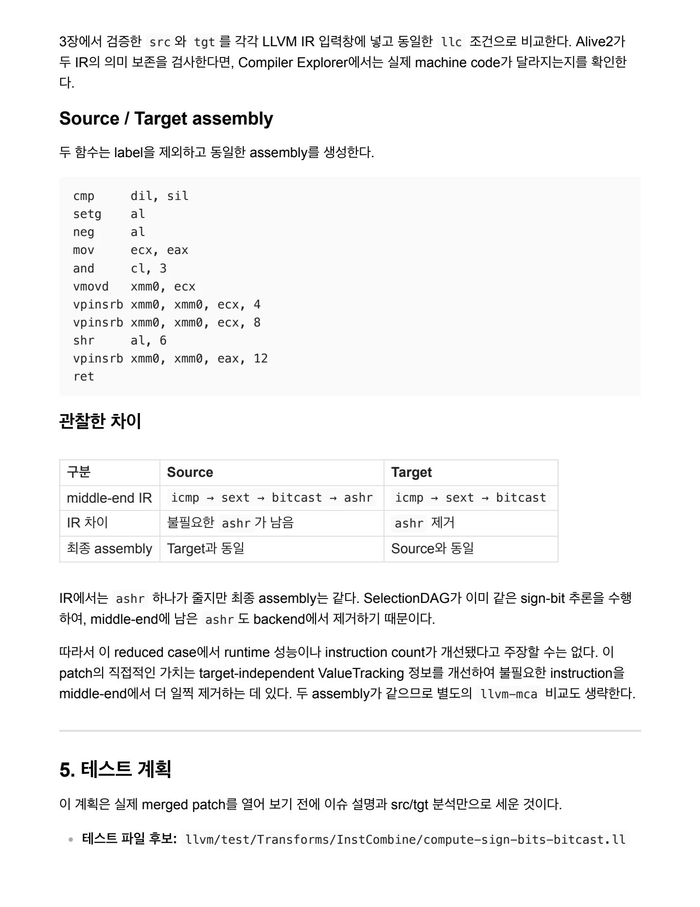
기본 CHECK: bitcast 는 남고, 불필요한 ashr 는 사라지며, ret 가 bitcast 결과를 직접 사용해 / 야 한다. / Positive test 확인 목적
기본 CHECK: bitcast는 남고, 불필요한 ashr는 사라지며, ret가 bitcast 결과를 직접 사용해 야 한다.
Positive test | 확인 목적 |
|---|---|
| 이슈가 제시한 최소 vector-to-vector case |
| scalar source도 같은 fast case로 처리되는지 확인 |
| source vector의 모든 lane을 안전하게 분석하는지 확인 |
서로 다른 lane별 shift와 연속 ashr | all-sign-bit 성질이 shift amount 1에만 한정되지 않음을 확인 |
Negative / edge test | 그대로 남아야 하는 이유 또는 확인할 경계 |
|---|---|
| source가 0 또는 -1이라고 보장할 수 없음 |
source lane 일부만 all-sign-bit | 모든 source lane에 공통으로 성립하는 정보가 아님 |
floating-point source | middle-end ComputeNumSignBits 의 이번 지원 범위 밖 |
narrow element → wide element | 이슈가 요청한 wide-to-narrow split 방향이 아님 |
destination scalar 또는 scalable vector | 이번 최소 patch의 fixed-vector 범위 밖 |
demanded lane subset | 모든 source lane을 demand하는 보수적 구현의 정밀도 한계 확인 |
positive test뿐 아니라 “fold하면 안 되는 입력에서 ashr 가 유지되는가?”를 확인하는 negative test가 필 요하다고 판단했다. 실제 patch를 본 뒤 이 계획과 accepted regression test를 비교한 결과는 7장에서 다 룬다.
6. 패치 위치 추정
겉으로 남아 있는 instruction은 ashr지만, ashr의 fold를 새로 구현할 필요는 없었다. 기존 호출 흐름은 이미 다음과 같았다.
InstCombine의 visitAShr
→ simplifyAShrInst
→ ComputeNumSignBits
→ 값의 모든 비트가 sign bit이면 원래 operand 반환정보가 끊기는 지점은 bitcast였으므로 사전 분석에서 세운 패치 가설은 다음과 같았다.
페이지 배치·기호·도식 확인하기

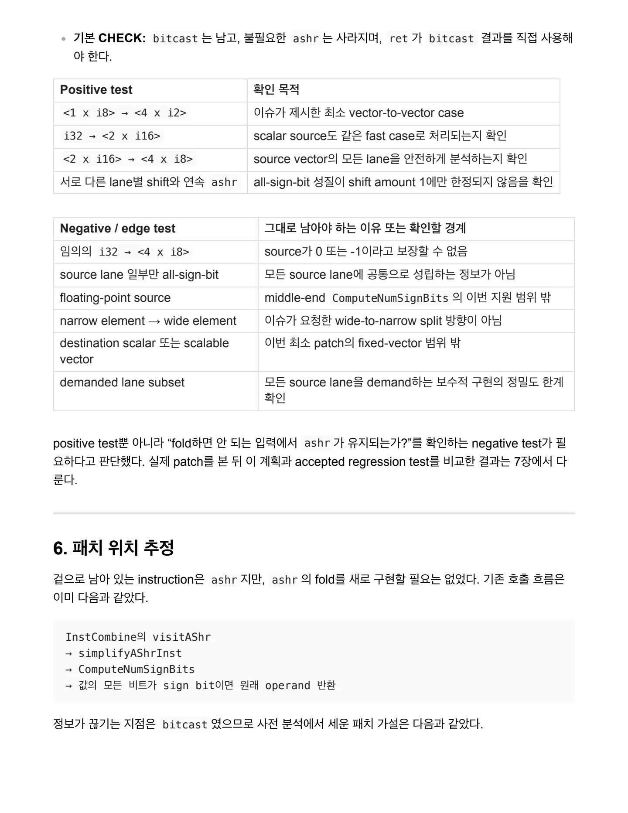
질문 판단 / 사용자에게 보이는 현상 불필요한 ashr 가 InstCombine 뒤에도 남음 / 실제 지식 결손 bitcast 결과의 sign bits를 계산하지 못함
질문 | 판단 |
|---|---|
사용자에게 보이는 현상 | 불필요한 ashr 가 InstCombine 뒤에도 남음 |
실제 지식 결손 | bitcast 결과의 sign bits를 계산하지 못함 |
구현 파일 | |
함수 | |
추가할 case | |
PatternMatch | 전용 matcher보다 Operator opcode switch와 기존 분석 helper 재사용 |
필요한 방향 | 넓은 source element를 더 작은 fixed-vector element로 나누는 경우 |
핵심 판정 | source의 sign bits 수가 source element width와 같은가? |
특정한 sext → bitcast → ashr 모양만 찾는 PatternMatch를 추가하는 방식은 적절하지 않다고 판단 했다. bitcast 에 대한 공용 ValueTracking 정보를 개선하면 이 정보를 사용하는 기존 simplifier들이 함께 이점을 얻을 수 있기 때문이다.
7. 실제 merged patch 학습
최종 patch는 예상한 위치에 다음 fast case를 추가했다. 핵심만 옮기면 다음과 같다.
case Instruction::BitCast: {
Value *Src = U->getOperand(0);
Type *SrcTy = Src->getType();
if (!SrcTy->isIntOrIntVectorTy())
break;unsigned SrcBits = SrcTy->getScalarSizeInBits();
if ((SrcBits % TyBits) != 0)
break; if (isa<FixedVectorType>(Ty)) {
Tmp = ComputeNumSignBits(Src, Depth + 1, Q);
if (Tmp == SrcBits)
return TyBits;
}
break;
}각 조건의 역할은 다음과 같다.
페이지 배치·기호·도식 확인하기

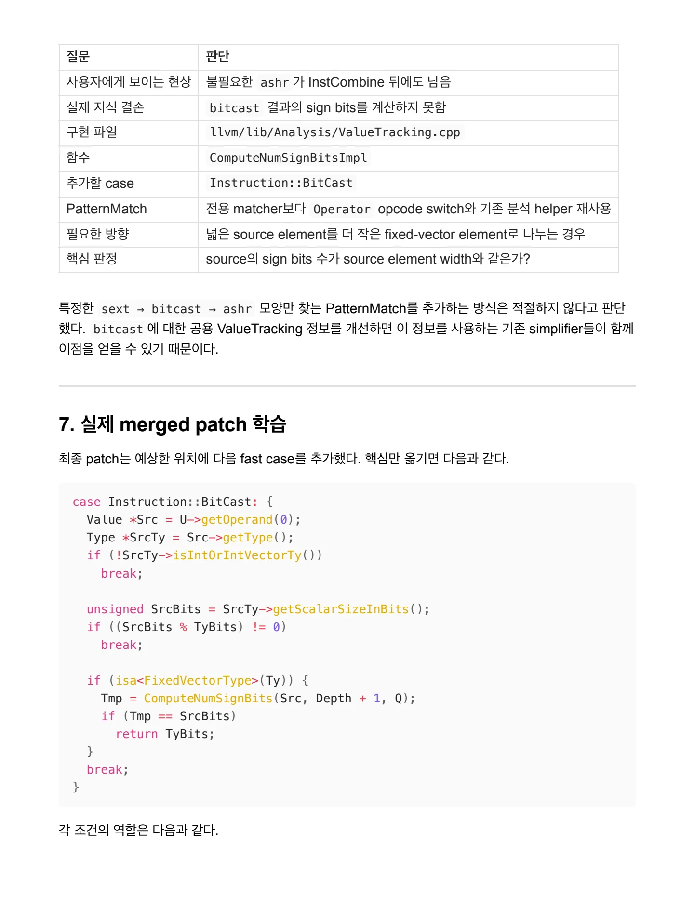
조건 역할 / isIntOrIntVectorTy() middle-end 분석이 지원하는 integer source만 허용 / SrcBits % TyBits == 0 source element를 de
조건 | 역할 |
|---|---|
| middle-end 분석이 지원하는 integer source만 허용 |
| source element를 destination element로 정확히 나눌 수 있 는지 확인 |
| 이번 patch가 지원하는 destination 범위를 고정 |
| wrapper가 source의 모든 scalar/vector element를 올바르 게 demand |
| source element의 모든 비트가 sign bit와 같은지 확인 |
| 각 destination element의 모든 비트도 sign bit라고 보고 |
regression test가 증명하는 범위
최종 변경은 두 파일, 총 +86 / -0이다.
파일 | 변경 내용 |
|---|---|
| BitCast fast case 25 줄 추가 |
| regression test 61줄 추 가 |
실제 test는 다음 네 가지를 확인한다.
Case | 기대 결과 | 확인하는 것 |
|---|---|---|
vector → vector | 거 | 이슈의 대표 방향 |
scalar → vector | 거 | source가 scalar인 경우도 지원 |
여러 lane별 shift와 연속 shift | 모두 제거 | 모든 destination element가 all-sign-bit라는 일반성 |
임의의 non-sign-extended source | 지 | all-sign-bit 보장이 없으면 추론하지 않는 negative case |
리뷰에서 구현이 다듬어진 과정
처음부터 최종 형태가 나온 것은 아니었다. 리뷰를 통해 다음 사항이 정리되었다.
SelectionDAG는 floating-point source도 일부 다루지만, middle-end의 ComputeNumSignBits
페이지 배치·기호·도식 확인하기

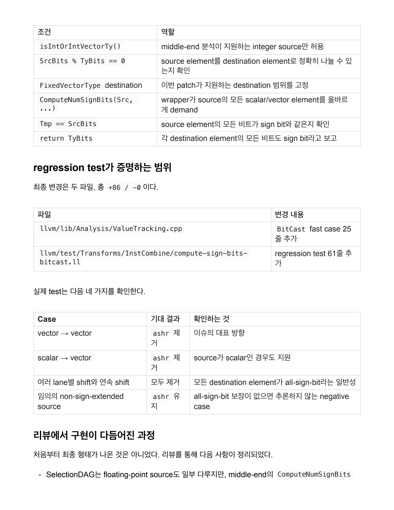
경로에는 그대로 적용할 수 없어 integer와 integer vector만 남겼다. / scalar용 1-bit DemandedElts 를 vector source에 넘기는 것은 잘못이므로, sc
경로에는 그대로 적용할 수 없어 integer와 integer vector만 남겼다. scalar용 1-bit DemandedElts 를 vector source에 넘기는 것은 잘못이므로, scalar/vector별 all- elements mask를 이미 만드는 wrapper를 재사용했다. scalar source와 fixed-vector source를 따로 처리하던 중복 branch를 하나로 합쳤다. negative test에 목적을 설명하는 주석을 추가했다.
SelectionDAG와 같은 large element , small element , sign splat fast case 용어를 사용해 두 구현의 대응 관계를 분명히 했다.
이슈 작성자가 댓글에 제시한 sketch에는 다음 자기 비교 오타도 있었다.
NumSrcSignBits == NumSrcSignBits이 조건은 항상 참이다. 이슈 설명, SelectionDAG 선례, 실제 merged patch를 함께 보면 의도는 다음과 같 다.
NumSrcSignBits == NumSrcEltBitsmaintainer가 제공한 pseudocode도 그대로 옮기지 않고 주변 설명과 실제 API를 대조해야 한다는 사례다.
최초 시도와 실제 해결 PR 비교
처음 이 이슈를 맡은 기여자가 만든 PR #97967은 2026-08-09 기준 open/unmerged 상태이며 test가 없 다. 이후 다른 기여자가 만든 PR #127218이 리뷰를 거쳐 실제 해결 patch로 merge되었다.
항목 | #97967 | #127218 |
|---|---|---|
구현 방향 | 핵심 아이디어는 포함 | type과 width 조건, wrapper 사용까지 완성 |
opcode/API | accepted LLVM API와 맞지 않는 부 분 존재 | |
source type guard | 없음 | integer/int-vector로 제한 |
tests | 없음 | positive와 negative를 포함한 4 cases |
review | 실질적인 review 없음 | 17개 inline comment와 승인 |
결과 | open/unmerged | 2025-03-06 merged |
사전 예상과 최종 patch도 비교해 보았다.
페이지 배치·기호·도식 확인하기

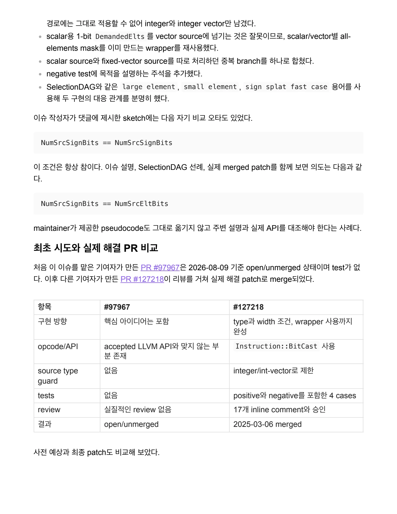
항목 사전 예상 실제 결과 / 구현 파일과 함수 ValueTracking.cpp , ComputeNumSignBitsImpl 일치 / 추가 opcode BitCast 일치
항목 | 사전 예상 | 실제 결과 |
|---|---|---|
구현 파일과 함수 | | 일치 |
추가 opcode | | 일치 |
consumer 수정 | 기존 ashr simplifier를 재사용하므로 불필요 | 수정 없음 |
source / destination | integer 또는 integer vector / fixed vector | 일치 |
fast/slow 범위 | all-sign-bit fast case만 | 일치 |
tests | vector, scalar, multiple shift, arbitrary source | 모두 포함 |
최종 assembly 개선 | SelectionDAG 때문에 없을 가능성 | 실제로 동일 |
AI에게 질문한 내용
튜토리얼의 지침에 따라 정답 patch를 먼저 보지 않고 이슈와 IR을 해석한 뒤, 이해가 막히는 지점을 다음과 같이 나누어 질문하고 LLVM source 및 실제 PR과 대조했다.
ComputeNumSignBits 가 무엇을 반환하며, vector에서 왜 demanded lane들의 최솟값을 사용하는 가? sext i1의 결과가 왜 0 또는 -1이고, 왜 모든 비트가 sign bit가 되는가? wide-to-narrow bitcast 뒤에도 all-sign-bit 성질이 유지되는 이유는 무엇인가? partial sign-bit case에서만 lane 위치와 endianness 계산이 필요한 이유는 무엇인가?
겉으로는 ashr 가 남는데 왜 InstCombineShifts.cpp 가 아니라 ValueTracking.cpp 를 수정해야 하는가? Alive2에서는 변환이 맞는데 source와 target assembly가 동일하게 나오는 이유는 무엇인가? 초기 PR과 accepted PR의 차이에서 type guard, DemandedElts wrapper와 negative test가 왜 필요한가?
답변은 이슈 본문만으로 확정하지 않고 SelectionDAG 선례, ComputeNumSignBits call chain, Alive2 결과, merged diff와 review comment를 다시 확인했다.
새롭게 이해한 LLVM 개념
analysis 개선은 직접 IR을 생성하지 않아도 기존 transform의 적용 범위를 넓힐 수 있다. 화면에 남은 instruction과 실제로 수정해야 할 위치는 다를 수 있다. 이 사례에서는 ashr가 증상이었고 bitcast 의 ValueTracking 결손이 원인이었다. vector bitcast 를 볼 때는 total bit width와 scalar element width를 구분해야 한다. vector 분석에서는 값의 내용뿐 아니라 DemandedElts mask의 폭과 의미도 correctness의 일부다. SelectionDAG의 구현을 참고할 수 있지만, middle-end의 type 체계와 helper API에 맞게 범위를 다 시 검토해야 한다. all-sign-bit fast case는 endianness와 무관하지만 partial sign-bit slow case는 그렇지 않다.
페이지 배치·기호·도식 확인하기

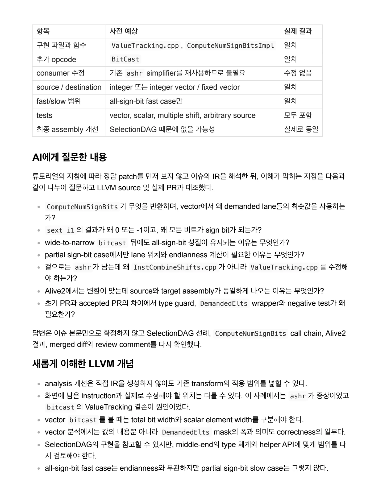
Alive2의 의미 보존, InstCombine의 IR 변화, backend의 assembly 변화는 서로 다른 질문이므로 각 / 각 확인해야 한다. / backend가 이미 같은 최적화를 수행해도
Alive2의 의미 보존, InstCombine의 IR 변화, backend의 assembly 변화는 서로 다른 질문이므로 각 각 확인해야 한다. backend가 이미 같은 최적화를 수행해도 target-independent middle-end IR을 일찍 정리하는 가치 는 남는다. good first issue도 type invariant, helper 재사용, negative test와 review 대응이 중요하다.
8. 다음에 혼자 시도할 때 보완할 점
이슈가 직접 알려 준 사실, 패치를 보기 전에 세운 가설, merged patch에서 확인한 사실을 처음부터 구 분해 기록한다. reduced IR을 먼저 한 줄씩 해석한 뒤 분석 함수와 구현 파일을 추적한다. vector bitcast 에서는 total bit width와 scalar element width를 따로 계산한다. analysis helper를 수정할 때는 값의 성질뿐 아니라 DemandedElts 같은 API invariant도 함께 확인 한다. SelectionDAG 구현을 참고하더라도 middle-end가 지원하는 type과 필요한 최소 fast case를 다시 정 한다. positive test와 함께 type, width와 값 조건을 벗어나는 negative test를 먼저 계획한다. Alive2의 의미 보존, InstCombine의 IR 변화, backend assembly와 성능 관찰을 별개의 검증 단계로 기록한다. maintainer가 댓글로 준 sketch도 실제 설명, API와 선례에 대조하여 오타나 빠진 guard를 확인한다. 실제 PR에서는 test부터 읽고, matcher 또는 analysis 조건, review에 따른 수정 순서로 학습한다.
최종 정리
Issue #87624는 bitcast 에서 끊기던 all-sign-bit 정보를 ComputeNumSignBitsImpl 이 전달 하도록 만든 ValueTracking 개선이다. 이 정보 덕분에 기존 ashr simplifier가 불필요한 shift를 제거 한다. 대표 src/tgt를 Alive2에서 직접 검증하여 의미가 같음을 확인했고, Compiler Explorer에서도 동일한 llc 조건으로 비교했다. 최종 assembly가 같은 이유는 SelectionDAG가 이미 backend에 서 같은 추론을 수행했기 때문이다. 즉 이 patch의 직접적인 가치는 새로운 backend 최적화가 아니라, 공용 middle-end 분석을 더 정확하게 만들어 IR을 더 일찍 단순화한 데 있다.
페이지 배치·기호·도식 확인하기

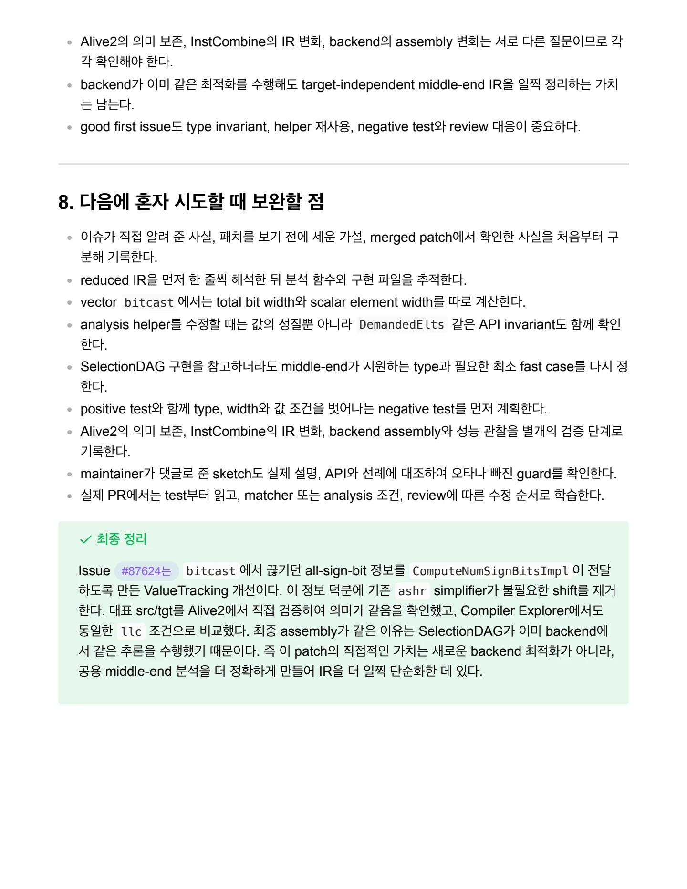
핵심 원리와 편집 주석
문제와 핵심 성질
원소의 모든 비트가 0이거나 모두 1이면 산술 오른쪽 시프트를 해도 값이 바뀌지 않는다. 이 값을 더 작은 원소로 bitcast해도 각 조각은 여전히 0 또는 -1이다.
%wide = sext <1 x i1> %condition to <1 x i8>
%narrow = bitcast <1 x i8> %wide to <4 x i2>
%shifted = ashr <4 x i2> %narrow, splat (i2 1)
; 목표: %shifted 대신 %narrow를 반환한다.분석 정보의 누락
ashr를 지우는 규칙 자체는 이미 있었다. ComputeNumSignBitsImpl이 bitcast를 건너 값을 분석하지 못한 것이 문제였다.
따라서 새 시프트 fold 대신 ValueTracking의 공용 분석을 보완한다. 이 결과를 사용하는 기존 단순화가 뒤에서 동작한다.
적용 조건
- 정수 또는 정수 vector 입력으로 범위를 제한한다.
- 원본 원소의 비트 폭이 결과 원소의 비트 폭으로 나누어떨어지는지 확인한다.
- 원본 원소의 모든 비트가 sign bit와 같다는 fast case를 확인한다.
- 원본 타입의 원소 수에 맞는 demanded-elements 마스크를 사용한다.
이 fast case는 어느 순서로 조각을 나누어도 각 조각이 같다. 따라서 이 범위에서는 endianness가 결론을 바꾸지 않는다.
검증과 결과 해석
자료는 Alive2의 의미 검증, InstCombine의 IR 변화, 백엔드의 기계어 변화를 따로 확인한다.
관찰할 IR 변화는 bitcast 자체의 제거가 아니다. 마지막 ashr가 사라지고 bitcast 결과가 직접 사용되어야 한다.
문서 전문과 버전
- PDFPDF 원자료 · 13쪽Issue87624.pdf
각 자료는 별도의 버전입니다. 같은 주제라도 구현 상태·설명 범위·수치가 다를 수 있습니다.
관련 이슈와 PR
구현·병합 상태와 측정값은 해당 제출 자료의 작성 시점 기준입니다.